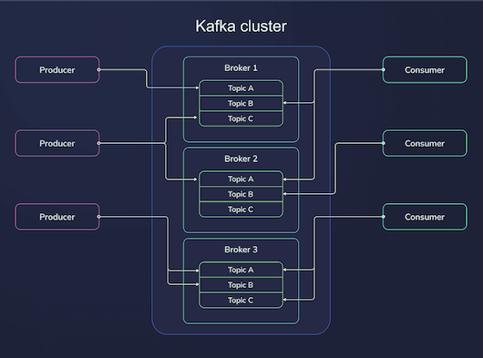

What is Federation?
The term federation refers to a organizational system in which multiple smaller entities (such as states, regions, or organizations) come together to form a larger, unified entity while retaining some level of individual autonomy.
In a political context, it typically involves a shared central government with member states under it; but each member still maintains its own independence in certain areas. (like policies, rules and state taxes etc) In an organizational context, federation can refer to a group of entities that join together to pursue common goal while maintaining their separate identities. For example, in sports, a federation might be an umbrella organization that coordinates the activities of various member teams or leagues.
Federation in Prometheus
In context of the Prometheus monitoring system, federation refers to the ability to scale monitoring by collecting and aggregating metrics from multiple Prometheus servers. It enables hierarchical or multi-level monitoring by allowing one Prometheus server (often called a federation server or mother-ship) to scrape selected time series from other Prometheus servers.
This is particularly useful in large-scale deployments where you have multiple independent Prometheus instances monitoring different parts of an infrastructure. With federation you can aggregate and centralize those metrics for broader analysis.
Partitions on the other hand, are a way to divide a topic's data into smaller, manageable chunks. Each Kafka topic is divided into one or more partitions, and these partitions are distributed across multiple brokers (machines) in the Kafka cluster. When a producer sends a message to a topic, Kafka writes that message to one of the topic's partitions. Each partition is an ordered, immutable sequence of records (messages), and each message within a partition is assigned a unique offset, which acts as its index. Partitions provide parallelism and scalability in Kafka as they allow Kafka to distribute the load across multiple brokers and because multiple consumers can consume from different partitions in parallel.
Let's look at an example, say you have a topic named “user-activity” and you configure it with 4 partitions. The data in this topic could be distributed as shown below:
- Partition 0: {"user1", "login"}, {"user2", "click"}
- Partition 1: {"user3", "purchase"}
- Partition 2: {"user4", "logout"}
- Partition 3: {"user5", "search"}
You can think of Partitions as a physical subcomponents of a Topic that are used to store and distribute data across brokers, ensuring parallelism, scalability, and high throughput.
Consumer Groups:
A consumer group in Kafka is a way to organize one or more consumers that work together to read messages from a Kafka topic. Consumers in the same group coordinate with each other so that each message in a topic is read by only one consumer in the group. This allows Kafka to distribute the load of processing messages across multiple consumers while maintaining fault tolerance.
On the other hand, different consumer groups can read the same messages independently. This allows for multiple processing systems to process the same data without interfering with each other. You could have one consumers group for logging and another for data analytics consuming from the same partition within a topic. Consumer groups provide parallel processing, fault tolerance and scalability.
Partition count and number of Consumers:
The partition count of a topic and the number of consumers are closely related, particularly in how they affect the parallelism and throughput of a consumer group. Kafka guarantees that a partition can be consumed by only one consumer at a time within a consumer group. This means that each partition will have exactly one consumer actively reading from it at any given time. i.e. if a topic has N partitions, the maximum number of consumers (within a single consumer group) that can actively read in parallel from that topic is N. The number of partitions defines the maximum parallelism.
Example Scenario:
Lets look at a real world example. Imagine you have a Kafka topic called ‘orders’ that stores information about pending customer orders at a restaurant.
# Topic: messages
Orders: order1, order2, order3, order4, order5, order6, order7, order8, order9
You’ve 3 chefs in the kitchen each capable of satisfying any order sent their way. So, to handle the load efficiently, you divide this topic into 3 partitions.
Orders
└── Partition 0: order1, order2, order3
└── Partition 1: order4, order5, order6
└── Partition 2: order7, order8, order9
And you create a consumer group with 3 consumers (Chef A, Chef B, and Chef C) to process these orders. With this setup:
- Chef A is assigned Partition 0
- Chef B is assigned Partition 1
- Chef C is assigned Partition 2
Each chef works on orders from its assigned partition, ensuring that the workload is divided and processed in parallel:
- Chef A reads order1, order2, order3
- Chef B reads order4, order5, order6
- Chef C reads order7, order8, order9
Ideally you would want to maximize parallelism and efficiency, and for that you’ll need the number of partitions to be equal to the number of consumers within a group, as shown in the above example. But, in real world Kafka clusters that’s often not the case.
The following scenarios will help you understand what happens when this equilibrium is not maintained:
1. More Consumers than Partitions:
Example Scenario:
- Topic: 3 partitions
- Consumers: 5 in the same group
If the number of consumers exceeds the number of partitions, some consumers will be idle. In the given example, we have 3 partitions and 5 consumers in the same group. Of the 5 consumers, only 3 will be active (one for each partition), and remaining 2 consumers will stay unassigned and won’t consume any data.
In this case, the excess consumers do not contribute to increased throughput because Kafka cannot assign more than one consumer per partition. To maximize efficiency, the number of partitions should match or exceed the number of consumers so that every consumer is active.
2. More Partitions than Consumers:
Example Scenario:
- Topic: 8 partitions
- Consumers: 4 in the same group
If the consumers in a group are fewer than the number of partitions, some consumers will be responsible for reading from multiple partitions. In the given example, we have 8 partitions and 4 consumers. So, each consumer will be assigned 2 partitions. This can increase the load on each consumer but ensures that all partitions are consumed.
Having fewer consumers than partitions still works, but it will increase the workload on individual consumers, possibly leading to bottlenecks if the consumers can't handle the load.
3. Equal Number of Consumers and Partitions:
Example Scenario:
- Topic: 6 partitions
- Consumers: 6 in the same group
When the number of consumers equals the number of partitions, each consumer is assigned one partition. This setup ensures that all consumers are working in parallel, and each partition is processed by exactly one consumer. In the given example, Kafka will assign 1 partition to each consumer. All consumers will be active and will handle exactly one partition.
Having an equal number of consumers and partitions provides optimal resource utilization and parallelism in most cases.
4. Adding partitions to existing Topics:
Yes, this is something you can do. Partition count is not set in stone. This can be useful when you want to handle increased message throughput, or if you have added more consumers and want to further parallelize processing. But, this scaling can happen only in one direction. You can add more partitions to an existing Kafka topic on the go; you can’t remove them. So, scaling-up partition count is something you should think through.
Say you need to handle increased message throughput and decide to go from 3 partitions to 5. Before you start, you should understand how your cluster will behave after a rebalance. Let’s take a look at what happens:
Impact on Consumers:
Consumers in a consumer group continue reading from the original partitions with their existing offsets. Kafka will not reassign old messages to the new partitions, so consumers do not lose track of their current position (offset) in the original partitions. For the new partitions, Kafka will assign them to consumers in the group after a rebalance. After rebalancing:
- Consumers in the group will be assigned both old and new partitions, depending on the number of consumers and partitions.
- Consumers will start reading from the new partitions starting from offset 0 for new messages in those partitions.
Example Scenario:
Let's say you have a topic user-events with 3 partitions and a consumer group with 3 consumers. Before Adding Partitions:
- Consumer A reads from Partition 0.
- Consumer B reads from Partition 1.
- Consumer C reads from Partition 2.
Now, you add 2 more partitions, increasing the count to 5. Kafka will rebalance the partitions across the consumers. So, after Adding Partitions:
- Consumer A might read from Partition 0 and Partition 3 (new partition).
- Consumer B might read from Partition 1.
- Consumer C might read from Partition 2 and Partition 4 (new partition).
Impact on Existing Data:
When you increase the number of partitions in a topic, existing data within the old partitions is not re-distributed into the new partitions. The messages in the original partitions will remain in those partitions. The new partitions will only be used for new incoming data. Producers may begin sending messages to the new partitions depending on the partitioning strategy in use. (e.g., round-robin or partition key-based)
Offsets and Rebalancing:
The existing offsets for the original partitions are unaffected by the addition of new partitions. Consumers will continue to consume from their current offsets in the old partitions. The new partitions will start with offset 0, as they are empty when created. As new messages are produced into these new partitions, they will be consumed starting from offset 0.
Rebalancing happens automatically after the number of partitions changes, which ensures that all partitions (old and new) are distributed evenly across the consumers in the group.
5. Adding consumers to a consumer group:
When you add more consumers to a consumer group, Kafka rebalances the partition assignments across the new consumer group size. This means that some partitions will be reassigned to new consumers.
Since each partition can only be consumed by a single consumer within a consumer group, adding consumers increases the degree of parallelism only if there are more partitions than consumers. If there are more partitions, additional consumers will allow more partitions to be consumed in parallel. If you add more consumers than there are partitions, those extra consumers will remain idle.
Impact on offset:
You might be asking, what happens to the offset when scaling up the number of consumers in a consumer group consuming from a topic with more partitions than consumers? Since in that case, some of the partitions will be consumed my new consumers after the rebalance. Where do they start consuming from? The same shift in consumers can happen when you reduce the number of consumers.
In both cases, the partition rebalancing occurs, but offsets are preserved on a per-partition basis, even after rebalancing. Offsets are stored per partition in Kafka, and each consumer tracks its own partition offsets in Kafka’s internal storage (the __consumer_offsets topic). When partitions are reassigned to new consumers:
- The new consumer assigned to a particular partition will continue from the latest committed offset of that partition, even though the consumer itself has changed. i.e. it will start where the previous consumer left off, maintaining Kafka’s guarantee of ordered processing within each partition.
- This ensures that no messages are reprocessed or skipped due to rebalancing; the offset per partition is seamlessly preserved, maintaining data consistency.
During rebalancing, there might be a slight delay in consumption while partitions and offsets are reassigned. This process is typically quick but can cause a brief pause in message processing for the rebalanced partitions.
6. Removing consumers from a consumer group:
When you reduce the number of consumers, Kafka will rebalance the remaining consumers in the group, reassigning the partitions from the removed consumers to the remaining active consumers.
The remaining consumers will now be responsible for consuming messages from more partitions. This means each consumer will have to handle more messages, which can increase the processing load on each remaining consumer. If the remaining consumers are not scaled to handle the increased workload, this could lead to slower processing, as each consumer now processes messages from multiple partitions.
Summary:
- One partition can be consumed by only one consumer from a consumer group. If there are more consumers than partitions, some consumers will be idle. If there are fewer consumers than partitions, some consumers will consume from multiple partitions.
- No two consumers in the same group will process the same partition at the same time. This partition-to-consumer mapping within a consumer group ensures efficient data consumption while maintaining the ordering guarantees within each partition.
- If a consumer fails, Kafka automatically reassigns the resp. partition to another active consumer in the same group.
- You can add more partitions to a Kafka topic at any time, but existing data is not re-distributed. New partitions will only be used for new incoming messages.
- After a rebalance, consumers continue consuming from their current offsets in the original partitions, and the new partitions will be assigned to consumers after a rebalance. i.e. offsets for the old partitions are not affected, and new partitions start with offset 0.
- The preservation of offsets after scaling up is one of Kafka’s core strengths, allowing consumer groups to scale up or down while maintaining reliable and ordered message processing.
- The rebalancing process is automatic, but it does temporarily interrupt message consumption while partitions are reassigned.